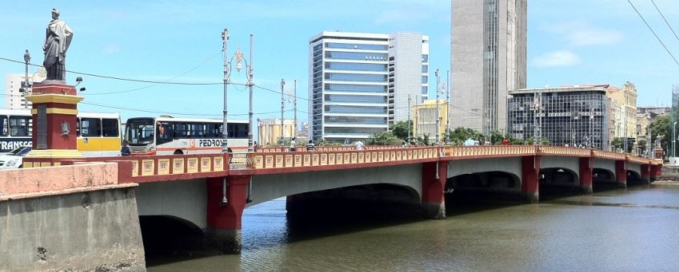
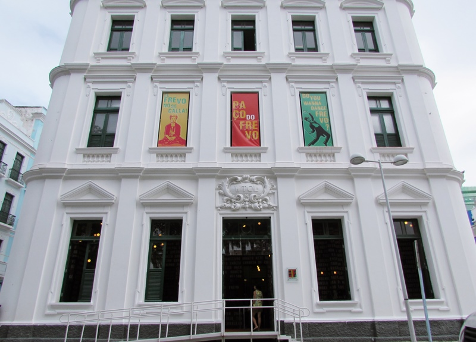
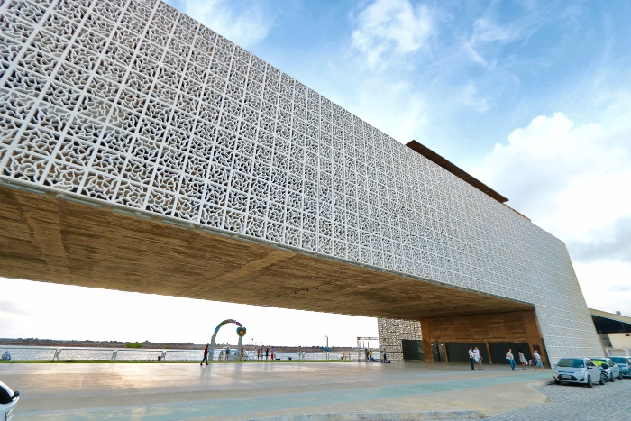

Recife Antigo
O Recife Antigo é uma região histórica da cidade do Recife, marcada por suas ruas de paralelepípedos, casarões coloniais e uma rica vida cultural.
Ponte Maurício de Nassau
A Ponte Maurício de Nassau é uma das pontes mais antigas do Recife, construída durante o período colonial holandês no século XVII. Ela liga o Recife Antigo à Ilha de Santo Antônio e é um marco da arquitetura e história da região. Com suas elegantes arcadas e estrutura robusta, a ponte é um local popular para passeios a pé e oferece vistas panorâmicas do rio e da cidade.
Paço do Frevo
O Paço do Frevo é um espaço cultural dedicado à preservação e promoção do frevo, uma das manifestações culturais mais importantes de Pernambuco. Localizado no Recife Antigo, o Paço do Frevo oferece exposições permanentes e temporárias, apresentações ao vivo, oficinas e cursos relacionados ao frevo. É um lugar onde os visitantes podem aprender sobre a história e a importância desse gênero musical e de dança único.
Cais do Sertão
O Cais do Sertão é um museu dedicado à cultura do sertão nordestino, localizado no Recife Antigo, próximo ao Marco Zero. O museu apresenta exposições interativas e imersivas que destacam a história, a arte, a música e as tradições do povo sertanejo. Os visitantes podem explorar exposições permanentes e temporárias, assistir a apresentações culturais ao vivo e participar de atividades educativas. O Cais do Sertão oferece uma oportunidade única de mergulhar na rica e diversificada cultura do sertão brasileiro.
